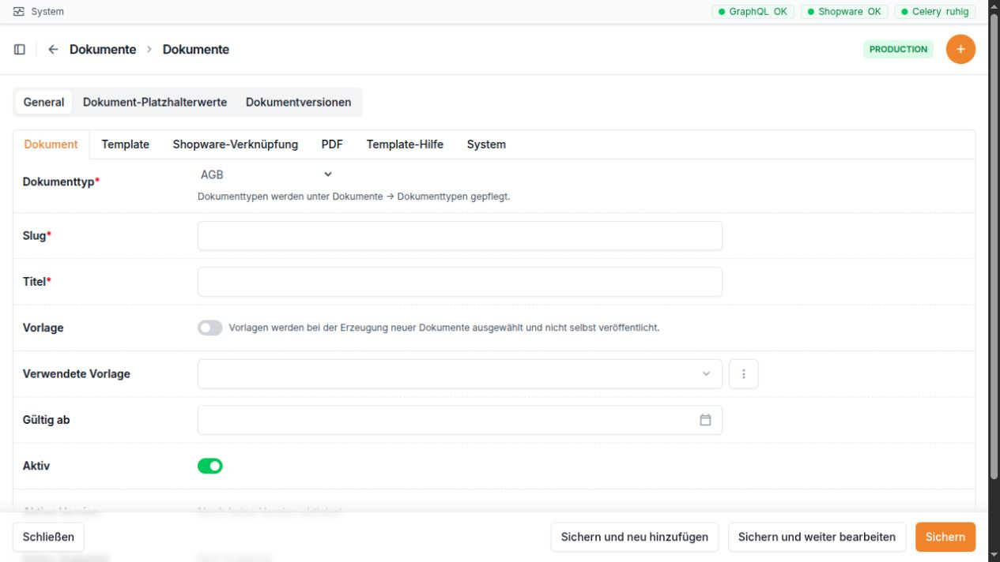

Dokumente¶
Wofür ist dieser Bereich da?¶
Im Bereich Dokumente pflegen Sie Inhalte wie Preislisten, Bestellscheine, AGB, Widerrufsbelehrungen, Datenschutzerklärungen, Impressum und sonstige Dokumente. Aus einem gespeicherten Dokument kann die GC-Bridge eine PDF-Datei erzeugen. Diese PDF und optional auch der Inhalt einer Shopware-Erlebniswelt können veröffentlicht werden.
Vor einer Veröffentlichung sollten Sie immer eine Vorschau prüfen. Bei wichtigen Texten empfiehlt sich außerdem eine Dokumentversion. Dadurch bleibt der freigegebene Stand nachvollziehbar.


Die Dokumentmaske ist in übersichtliche Reiter gegliedert. Der erste Reiter enthält die Angaben, mit denen Sie das Dokument eindeutig erkennen.
Die Dokumentliste¶
Spalte |
Einfache Erklärung |
|---|---|
Titel |
Lesbarer Name des Dokuments. Ein Klick öffnet den Eintrag. |
Dokumenttyp |
Art des Dokuments, zum Beispiel Preisliste oder AGB. |
Vorlage |
Zeigt, ob der Eintrag als Vorlage für neue Dokumente dient. |
Slug |
Eindeutiger kurzer Schlüssel. |
Template |
Zeigt, ob der Inhalt aus einer hochgeladenen HTML-Datei, aus dem sichtbaren Editor oder aus keiner Vorlage kommt. |
Aktiv |
Legt fest, ob das Dokument verwendet werden soll. Der Wert kann direkt in der Liste geändert werden. |
PDF erzeugt am |
Zeitpunkt der letzten PDF-Erstellung. |
Link zum Herunterladen. Fehlt die Datei trotz gespeichertem Namen, wird dies angezeigt. |
|
Aktualisiert am |
Zeitpunkt der letzten Änderung. |
Die Suche berücksichtigt Titel, Slug, HTML, CSS, Vorlagendatei und PDF-Dateiname. Filter gibt es für Dokumenttyp, Vorlage und Aktiv-Status.
Als Sammelaktion steht PDF speichern zur Verfügung. Sie erzeugt für jedes markierte Dokument eine aktuelle PDF-Datei.
Dokument anlegen oder bearbeiten¶
Die Detailseite ist in mehrere Reiter gegliedert.
Reiter „Dokument“¶
Feld |
Bedeutung und richtige Verwendung |
|---|---|
Dokumenttyp |
Pflichtauswahl aus den aktiven Dokumenttypen. Dokumenttypen werden unter Dokumente → Dokumenttypen gepflegt. |
Slug |
Pflichtfeld und eindeutiger
kurzer Schlüssel, zum Beispiel
|
Titel |
Pflichtfeld und sichtbarer Name des Dokuments. |
Vorlage |
Aktivieren, wenn dieser Eintrag als Ausgangspunkt für neue Dokumente dienen soll. Vorlagen selbst werden nicht veröffentlicht. |
Verwendete Vorlage |
Zeigt bei einem erzeugten Dokument, aus welcher aktiven Vorlage es entstanden ist. |
Gültig ab |
Datum, ab dem der Inhalt gelten soll. Bei Preislisten kann dieses Datum auf dem Deckblatt erscheinen. |
Aktiv |
Legt fest, ob das Dokument verwendet werden soll. |
Kategorien mit Doppelauflistung |
Nur bei Preislisten sichtbar. Produkte aus diesen Kategorien und ihren Unterkategorien dürfen zusätzlich zu ihrer normalen Kategorie nochmals erscheinen. |
Aktive Version |
Nur-Anzeige der derzeit freigegebenen Dokumentversion. |
Daten-Snapshot |
Nur-Anzeige eines eingefrorenen Datenstands. Bei einer erzeugten Preisliste werden beispielsweise Ursprung, Vorlage, Positionszahl und Erzeugungszeit gezeigt. |
Reiter „Template“¶
Feld |
Bedeutung und richtige Verwendung |
|---|---|
Jinja2-Engine |
Erweiterte Vorlagenfunktion für automatisch eingesetzte Daten. Bei bestehenden Vorlagen die Einstellung nicht ohne Grund ändern. |
HTML-Template-Datei |
Optionaler Upload einer |
Template |
Nur-Anzeige, ob eine Datei oder der sichtbare HTML-Editor als Quelle verwendet wird. |
DOCX-/RTF-Quelldatei |
Optionales Original zum Herunterladen und Bearbeiten. Für den geführten KI-Import ist eine DOCX-Datei nötig; eine RTF-Datei dient nur als hinterlegte Quelle. |
KI-Prompt für Word-Import |
Optionaler aktiver Prompt für den Word-Import. Ohne Auswahl wird der eingerichtete Standard verwendet. |
HTML |
Sichtbarer Inhaltseditor. Er bietet einen visuellen Modus, einen HTML-Code-Modus und eine Vollbildansicht. |
CSS |
Gestaltung des Dokuments. Das Feld besitzt ebenfalls eine Vollbildansicht. Änderungen wirken als Vorschau im HTML-Editor. |
Wichtig: Wenn Sie eine HTML-Datei neu hochladen, übernimmt die Bridge deren Inhalt in das HTML-Feld. Ändern Sie später ausdrücklich den sichtbaren HTML-Inhalt, wird die alte hochgeladene Datei als führende Quelle entfernt. So kann die sichtbare Änderung tatsächlich verwendet werden.
Der Reiter eignet sich auch für einfache Texte. Die Bereiche HTML-Code, CSS und Template-Hilfe sollten jedoch nur von geschulten Personen geändert werden.
Platzhalterwerte unter dem Dokument¶
Platzhalter sind Stellen wie <Firmenname> oder <Anschrift>, die
beim Word-Import durch freigegebene Werte ersetzt werden.
Feld |
Bedeutung |
|---|---|
Platzhalter |
Exakte Schreibweise aus der Word-Datei
einschließlich |
Wert |
Text, der an jeder Fundstelle dieses Platzhalters eingesetzt wird. |
Aktiv |
Nur aktive Werte werden verwendet. |
Aktualisiert am |
Automatischer Zeitpunkt der letzten Änderung. |
Reiter „Shopware-Verknüpfung“¶
Feld |
Bedeutung und richtige Verwendung |
|---|---|
Shopware Erlebniswelt |
Optional. Wählen Sie eine vorhandene Shop- oder Landingpage, deren genau ein Text-Element mit dem Dokumentinhalt ersetzt werden soll. Ohne Auswahl wird nur die PDF veröffentlicht. |
Shopware PDF-Datei |
Pflicht für die Veröffentlichung. Diese bereits vorhandene Shopware-PDF wird bei jeder Veröffentlichung überschrieben. |
Shopware Medienordner |
Optionaler Zielordner. Ohne Auswahl bleibt der bisherige Ordner der gewählten PDF erhalten. |
Shopware IDs |
Nur-Anzeige der gespeicherten Zuordnungen und möglicher fehlender Angaben. |
Die Auswahllisten werden beim Öffnen des Formulars aus Shopware geladen. Bei einer Verbindungsstörung zeigt das Feld einen Hinweis und möglicherweise nur die bereits gespeicherte Kennung.
Bei einer ausgewählten Erlebniswelt gilt eine wichtige Schutzregel: Sie muss genau ein Text-Element enthalten. Bei keinem oder mehreren Text-Elementen bricht die Bridge die Veröffentlichung ab und verändert den Seitenaufbau nicht.
Reiter „PDF“¶
Feld |
Bedeutung und richtige Verwendung |
|---|---|
PDF erzeugt am |
Zeitpunkt der letzten PDF-Erstellung. Wird automatisch gesetzt. |
PDF-Dateiname |
Automatisch aus dem Slug erzeugter Dateiname. |
Link zum Herunterladen der zuletzt erzeugten Datei. |
|
Cover-PDF |
Optionale PDF-Datei, die vor den eigentlichen Inhalt gesetzt wird. |
Cover-PDF Vorschau |
Zeigt den Namen der hinterlegten Cover-Datei. |
End-PDF |
Optionale PDF-Datei, die an das Dokument angehängt wird. |
End-PDF Vorschau |
Zeigt den Namen der hinterlegten End-Datei. |
Bei Preislisten kann automatisch ein Standard-Cover verwendet werden, wenn kein eigenes Cover hochgeladen ist. Die Bridge ergänzt bei Preislisten außerdem Seitenzahlen. Das Gültigkeitsdatum kommt zuerst aus Gültig ab, danach aus einem erkannten Monat und Jahr im Titel und sonst aus dem aktuellen Monat.
Reiter „Template-Hilfe“¶
Dieser Reiter ist eine Nachschlagehilfe für geschulte Personen. Er erklärt verfügbare Platzhalter, Schleifen, Bedingungen und Produktfelder. Für normale Textänderungen ist er nicht erforderlich.
Reiter „System“¶
Feld |
Bedeutung |
|---|---|
Angelegt am |
Automatischer Zeitpunkt der ersten Speicherung. |
Aktualisiert am |
Automatischer Zeitpunkt der letzten Änderung. |
Aktionen eines Dokuments¶
Aktion |
Wirkung |
Wichtiger Hinweis |
|---|---|---|
Neue Version anlegen |
Legt einen nummerierten Entwurf aus dem aktuellen HTML, CSS, Gültigkeitsdatum und Datenstand an. |
Die neue Version ist zunächst nicht aktiv. |
Word-Datei mit KI aufbereiten |
Öffnet den geführten Import einer DOCX-Datei. |
Nur für AGB, Datenschutzerklärung und Widerrufsbelehrung vorgesehen. Ergebnis muss von einem Menschen geprüft und freigegeben werden. |
PDF speichern |
Erzeugt eine aktuelle PDF auf dem Server und hinterlegt Dateiname und Zeitpunkt. |
Erst Vorschau prüfen; eine PDF-Erstellung veröffentlicht noch nichts in Shopware. |
In Shopware veröffentlichen |
Erzeugt jedes Mal eine neue PDF und überschreibt die ausgewählte Shopware-PDF. Optional wird das eine Text-Element der Erlebniswelt aktualisiert. |
Die Shopware-PDF muss vorher ausgewählt und das Dokument gespeichert sein. |
Vorschau |
Öffnet den aktuellen Inhalt als Vorschau im Browser. |
Bei einem Vorlagenfehler erscheint eine verständliche Fehlerseite; es wird nichts veröffentlicht. |
Dokumenttypen¶
Dokumenttypen legen fest, welche Art bei einem Dokument auswählbar ist. Voreingestellt sind Preisliste, Bestellschein, AGB, Widerrufsbelehrung, Datenschutzerklärung, Impressum und Sonstiges.
Feld |
Bedeutung und richtige Verwendung |
|---|---|
Name |
Lesbarer Name in der Auswahl. |
Kennung |
Eindeutiger kurzer Schlüssel. Nach der ersten Verwendung möglichst nicht mehr ändern, weil bestehende Dokumente diese Kennung speichern. |
Aktiv |
Nur aktive Typen stehen bei neuen Änderungen zur Auswahl. Kann direkt in der Liste geändert werden. |
Einstellungen |
Gemeinsame Zusatzangaben für diesen Typ. Dieses Feld wird als strukturierte Baum- oder Codeansicht angezeigt und sollte nur von geschulten Personen gepflegt werden. |
Angelegt am / Aktualisiert am |
Automatische Zeitangaben. |
Word-Import¶
Der geführte Word-Import ist für AGB, Datenschutzerklärungen und Widerrufsbelehrungen gedacht.
Hinterlegen Sie am Dokument eine DOCX-Datei und speichern Sie.
Wählen Sie Word-Datei mit KI aufbereiten.
Prüfen Sie die erkannten Platzhalter. Tragen Sie sichere Werte ein, wenn diese nicht aus dem bisherigen Dokument übernommen werden sollen.
Wählen Sie KI-Prompt und KI-Provider.
Starten Sie den Import. Der Auftrag läuft im Hintergrund.
Öffnen Sie das Ergebnis. Vergleichen Sie Word-Originaltext, ersetzte Werte, offene Platzhalter und erzeugtes HTML.
Korrigieren Sie erkennbare Darstellungsfehler im Ergebnis. Der juristische Inhalt darf nicht unbemerkt umgeschrieben werden.
Erst wenn keine offenen Platzhalter mehr vorhanden sind, wählen Sie Geprüftes Ergebnis übernehmen.
Sichtbare Felder eines Word-Imports¶
Feld |
Bedeutung |
|---|---|
Dokument |
Dokument, zu dem der Import gehört. |
KI-Prompt |
Verwendete Arbeitsanweisung. |
KI |
Verwendeter Anbieter. |
Status |
In Arbeit, Ergebnis vorhanden, Übernommen oder Fehlgeschlagen. |
Angefordert von |
Mitarbeiter, der den Import gestartet hat. |
Übernommene Platzhalter |
Zeigt Wert und Herkunft. „Benutzerangabe“ stammt aus der manuellen Eingabe, „KI aus bisheriger Fassung“ aus einem belegbaren alten Text. |
Offene Platzhalter |
Zeigt noch nicht aufgelöste Stellen. Solange welche vorhanden sind, ist die Freigabe gesperrt. |
Word-Originaltext |
Nur-Anzeige des gelesenen Ausgangstextes. |
Erzeugtes HTML |
Prüffeld für das Importergebnis. Bis zur Übernahme kann es berichtigt werden. |
Übernommen am |
Zeitpunkt der Freigabe. |
Technische Details |
Eingelesene Blöcke, verwendete Anfragen, Rohantworten und Fehler. Dieser eingeklappte Bereich ist für Fehlersuche gedacht. |
Ein übernommener Import kann nicht mehr geändert oder gelöscht werden. Das geprüfte Ergebnis wird als aktive Dokumentversion übernommen.
Dokumentversionen¶
Eine Dokumentversion ist ein festgehaltener Stand. Sie enthält den Inhalt, die Gestaltung, die Vorlageneinstellung, das Gültigkeitsdatum und den damaligen Daten-Snapshot.
Feld |
Bedeutung |
|---|---|
Dokument |
Zugehöriges Dokument. Wird automatisch gesetzt. |
Version |
Fortlaufende Nummer. Wird automatisch vergeben. |
Bezeichnung |
Freier Name, zum Beispiel „Freigabe Rechtsabteilung“. |
Gültig ab |
Gültigkeitsdatum dieses Standes. |
Aktiv |
Zeigt, ob diese Version gerade maßgeblich ist. Pro Dokument kann nur eine Version aktiv sein. |
Aktiviert am |
Zeitpunkt der Aktivierung. |
Jinja2-Engine |
Gespeicherte Vorlageneinstellung dieser Version. |
HTML-Vorlage |
Festgehaltener Inhalt, der vor der Freigabe geprüft werden kann. |
CSS |
Festgehaltene Gestaltung. |
Daten-Snapshot |
Eingefrorene Daten dieses Standes. |
Angelegt am / Aktualisiert am |
Automatische Zeitangaben. |
Mit Aktivieren und zu Shopware veröffentlichen wird die bisher aktive Version abgelöst. Ihr Inhalt wird auf das Hauptdokument übertragen; danach werden PDF und gegebenenfalls Erlebniswelt in Shopware aktualisiert. Diese Aktion funktioniert nur, wenn mindestens eine Shopware-PDF-Datei am Dokument ausgewählt ist.
Eine aktive Version kann nicht gelöscht werden.
Typischer Ablauf bei einer normalen Dokumentänderung¶
Öffnen Sie Dokumente → Dokumente und suchen Sie nach Titel oder Slug.
Öffnen Sie das Dokument und prüfen Sie Dokumenttyp, Titel, Gültigkeitsdatum und Aktiv-Status.
Ändern Sie den Inhalt im visuellen HTML-Editor. Nutzen Sie den Code-Modus nur, wenn Sie HTML sicher beherrschen.
Speichern Sie das Dokument.
Öffnen Sie Vorschau und prüfen Sie Überschriften, Absätze, Seitenumbrüche und eingefügte Werte.
Legen Sie bei einem wichtigen Freigabestand mit Neue Version anlegen eine Version an.
Prüfen Sie in Shopware-Verknüpfung die gewählte PDF-Datei, optional die Erlebniswelt und den Medienordner.
Erzeugen Sie mit PDF speichern zunächst eine lokale PDF und laden Sie sie zur Kontrolle herunter.
Veröffentlichen Sie erst nach der Kontrolle mit In Shopware veröffentlichen oder aktivieren und veröffentlichen Sie die geprüfte Version.
Häufige Hinweise und Fehlerquellen¶
Dokumenttyp fehlt: Der Typ ist möglicherweise inaktiv. Unter Dokumenttypen prüfen.
Slug wird abgewiesen: Jeder Slug darf nur einmal vorkommen. Einen eindeutigen kurzen Namen wählen.
Änderung im HTML-Feld erscheint nicht: Eine hochgeladene HTML-Datei kann noch Vorrang haben. Nach einer ausdrücklich gespeicherten Editoränderung wird diese Verknüpfung normalerweise entfernt.
Vorschau zeigt einen Fehler: Inhalt oder Vorlage enthält eine ungültige Anweisung. Nichts veröffentlichen; letzte Änderung prüfen oder eine geschulte Person hinzuziehen.
PDF-Link fehlt: Zuerst PDF speichern ausführen.
PDF-Link meldet „Datei fehlt“: Der gespeicherte Dateiname ist vorhanden, die Datei selbst aber nicht. PDF neu erzeugen.
Shopware-Auswahlen können nicht geladen werden: Shopware-Verbindung prüfen. Keine gespeicherte ID auf Verdacht überschreiben.
Veröffentlichung ist nicht möglich: Es wurde keine vorhandene Shopware PDF-Datei gewählt oder die Auswahl wurde noch nicht gespeichert.
Nur PDF, keine Erlebniswelt: Das ist zulässig. Ohne Erlebniswelt wird nur die ausgewählte PDF überschrieben.
Erlebniswelt wird abgewiesen: Sie enthält nicht genau ein Text-Element. Die Bridge schützt in diesem Fall den bestehenden Seitenaufbau und ändert nichts.
Medienordner fehlt oder wurde gelöscht: Einen noch vorhandenen Shopware-Ordner auswählen und speichern oder die Auswahl leer lassen, damit der aktuelle Ordner bleibt.
Word-Import wird abgewiesen: Er ist nur für AGB, Datenschutzerklärung und Widerrufsbelehrung vorgesehen.
Word-Import startet nicht: Zuerst eine DOCX-Datei speichern. Eine RTF-Datei reicht für diesen Ablauf nicht.
Freigabe des Word-Imports ist gesperrt: Mindestens ein Platzhalter ist noch offen.
Juristischer Text hat sich verändert: Nicht freigeben. Original und Ergebnis vergleichen und einen neuen, korrekten Import starten oder fachliche Prüfung anfordern.
Aktive Version lässt sich nicht löschen: Zuerst eine andere geprüfte Version aktivieren.
Version lässt sich nicht veröffentlichen: Am Hauptdokument fehlt die Shopware-PDF-Verknüpfung.
Vorlage wird versehentlich veröffentlicht: Ein als Vorlage markierter Eintrag ist als Ausgangspunkt gedacht und soll nicht selbst veröffentlicht werden.
Preisliste zeigt ein falsches Datum: Gültig ab prüfen. Fehlt es, versucht die Bridge Monat und Jahr aus dem Titel zu lesen.
Praxisbeispiel 1: Neue AGB aus einer Word-Datei prüfen und freigeben¶
Die Rechtsabteilung liefert neue AGB als Datei AGB_2026.docx. Die
Platzhalter <Firmenname> und <Anschrift> sollen mit
freigegebenen Angaben ersetzt werden.
Öffnen Sie Dokumente → Dokumente und wählen Sie das bestehende AGB-Dokument.
Prüfen Sie, ob der Dokumenttyp auf AGB steht.
Laden Sie unter DOCX-/RTF-Quelldatei die Datei
AGB_2026.docxhoch und speichern Sie.Wählen Sie im Aktionsmenü Word-Datei mit KI aufbereiten.
Tragen Sie bei
<Firmenname>und<Anschrift>die von der Rechtsabteilung bestätigten Werte ein.Prüfen Sie den vorausgewählten KI-Prompt und wählen Sie den vorgesehenen KI-Provider. Starten Sie den Import.
Warten Sie, bis der Status Ergebnis vorhanden zeigt.
Vergleichen Sie Word-Originaltext und Erzeugtes HTML. Prüfen Sie besonders Überschriften, Nummerierung, Absätze und die beiden ersetzten Werte.
Stellen Sie sicher, dass bei Offene Platzhalter „Keine offenen Platzhalter“ steht.
Wählen Sie Geprüftes Ergebnis übernehmen.
Öffnen Sie am Dokument die neue aktive Version und prüfen Sie noch einmal die Vorschau.
Erzeugen Sie eine PDF. Veröffentlichen Sie erst, wenn die Shopware-PDF-Verknüpfung stimmt und die fachliche Freigabe vorliegt.
Ergebnis: Die Word-Datei wurde strukturiert, die Werte wurden nachvollziehbar eingesetzt und der geprüfte Inhalt liegt als aktive Dokumentversion vor.
Praxisbeispiel 2: Preisliste prüfen und sicher in Shopware veröffentlichen¶
Aus der Preiserhöhung „Preiserhöhung Oktober 2026“ wurde bereits ein neues Preislisten-Dokument angelegt.
Öffnen Sie das erzeugte Dokument über den Link Erzeugte Preisliste in der Preiserhöhung oder suchen Sie es unter Dokumente.
Prüfen Sie Dokumenttyp: Preisliste, den Titel, Gültig ab, die verwendete Vorlage und die Anzeige Daten-Snapshot.
Kontrollieren Sie bei Bedarf Kategorien mit Doppelauflistung. Verwenden Sie diese Auswahl nur, wenn Produkte bewusst in einem zweiten Katalogabschnitt erscheinen sollen.
Öffnen Sie Vorschau. Prüfen Sie Kategorien, Produktnamen, Preise, Staffelpreise, Seitenumbrüche und das Datum auf dem Deckblatt.
Wählen Sie Neue Version anlegen und geben Sie der Version eine verständliche Bezeichnung wie „Freigabe Oktober 2026“.
Öffnen Sie Shopware-Verknüpfung. Wählen Sie die vorhandene Shopware-PDF-Datei aus. Wählen Sie die Erlebniswelt nur dann, wenn sie genau ein Text-Element enthält. Wählen Sie optional den Zielordner.
Speichern Sie das Dokument, damit alle Shopware-Verknüpfungen feststehen.
Wählen Sie PDF speichern und laden Sie die PDF herunter. Prüfen Sie Cover, Seitenzahlen, Preise und Schlussseite.
Öffnen Sie die zuvor angelegte Dokumentversion und wählen Sie Aktivieren und zu Shopware veröffentlichen.
Lesen Sie die Erfolgsmeldung. Prüfen Sie anschließend in Shopware die ersetzte PDF und – falls ausgewählt – den Inhalt der Erlebniswelt.
Ergebnis: Der freigegebene Preislistenstand ist als aktive Version nachvollziehbar, die aktuelle PDF wurde ersetzt und der bestehende Aufbau der Erlebniswelt blieb geschützt.